Public Investment
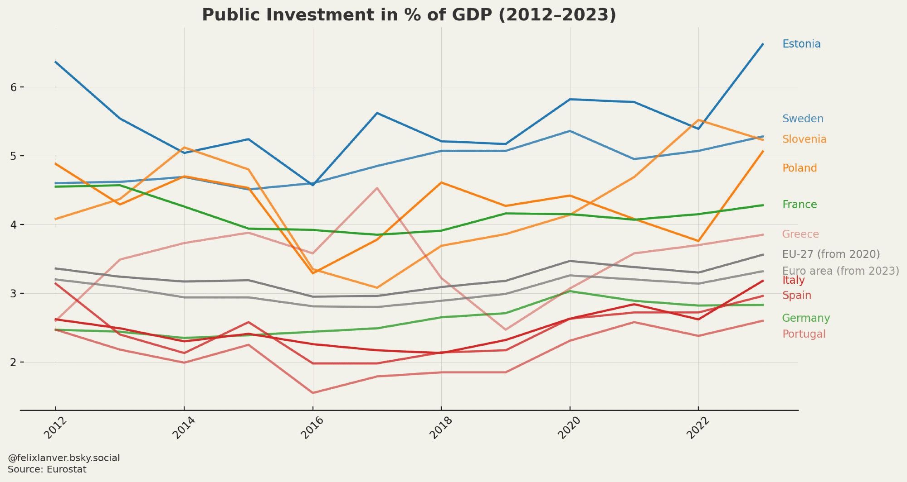IMF Forecast Revisions
IMF downgrades 2025 growth forecasts sharply for Mexico and the USA.
🇲🇽 Mexico: +1.4% → -0.3% (↓ 1.7pp)
🇺🇸 USA: +2.7% → 1.8% (↓ 0.9pp)
Most major economies are now expected to grow slower than projected just 3 months ago.
Central Bank Rates
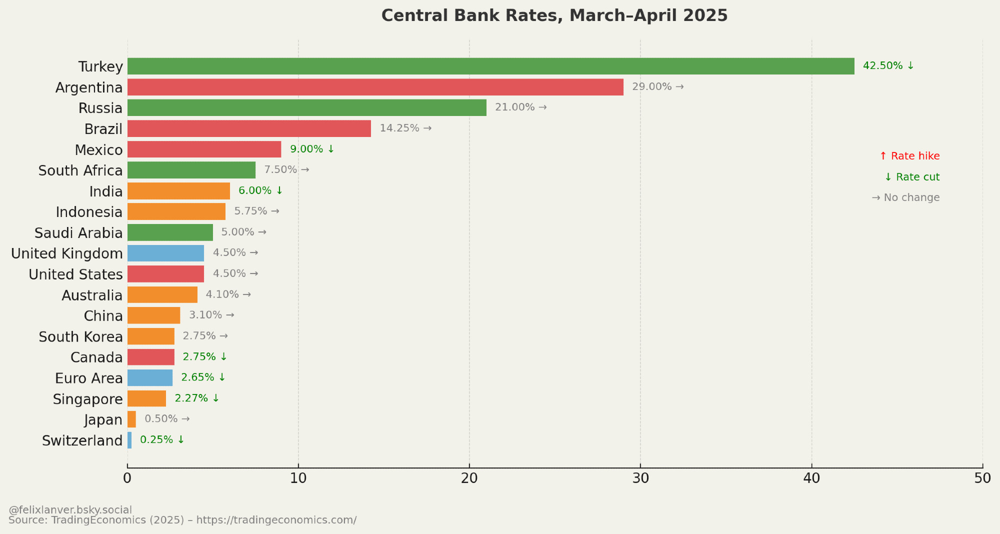Government Debt in the EU
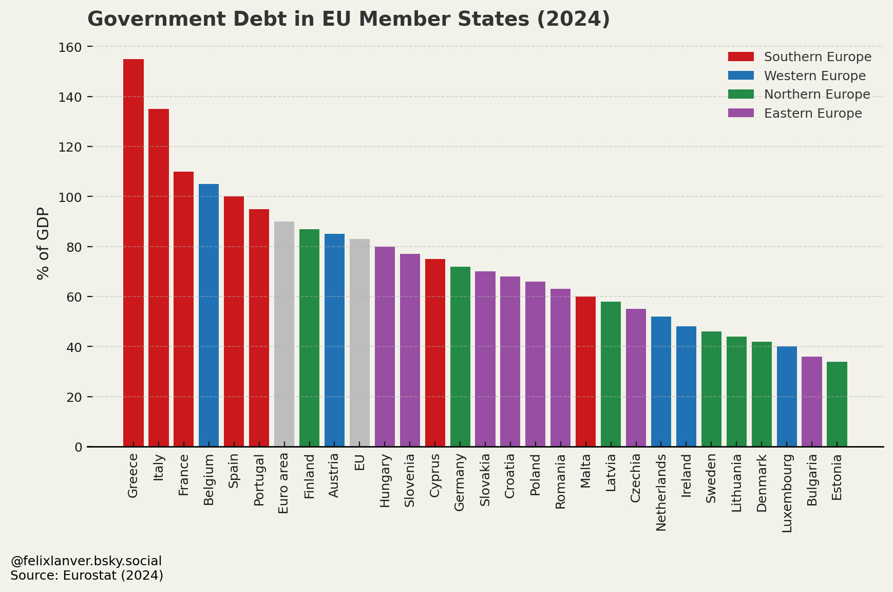Minimum Wages in the EU
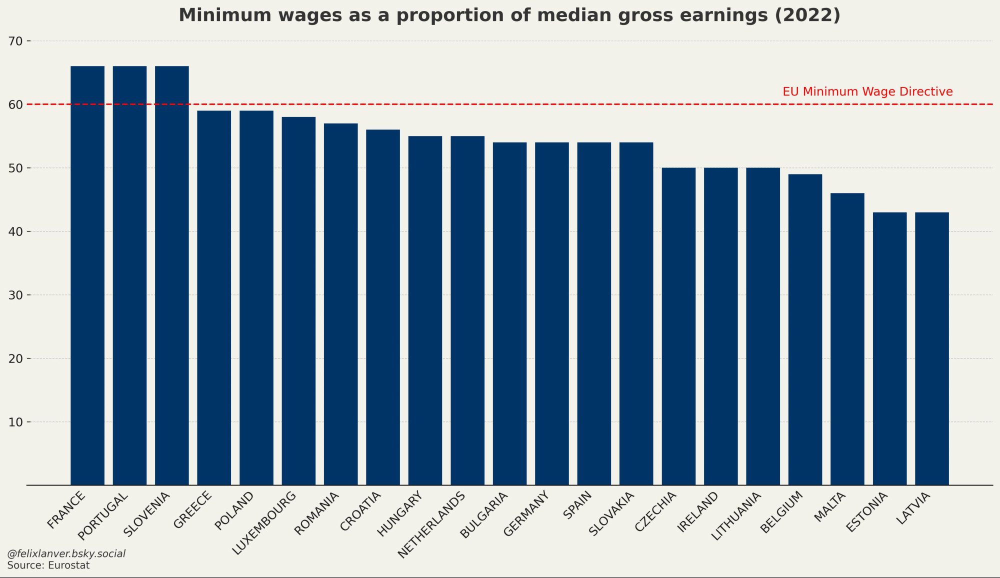Top Export Nations (Top 5)
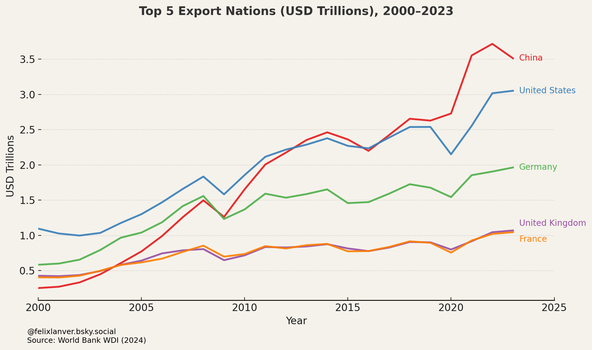EV Manufacturing
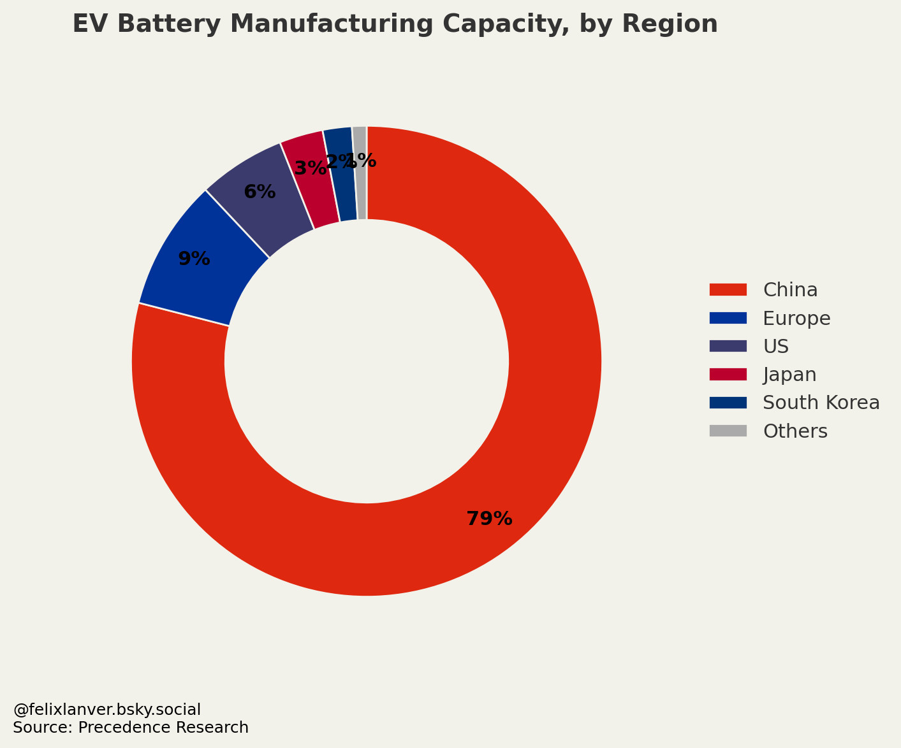Military Expenditure as % of GDP
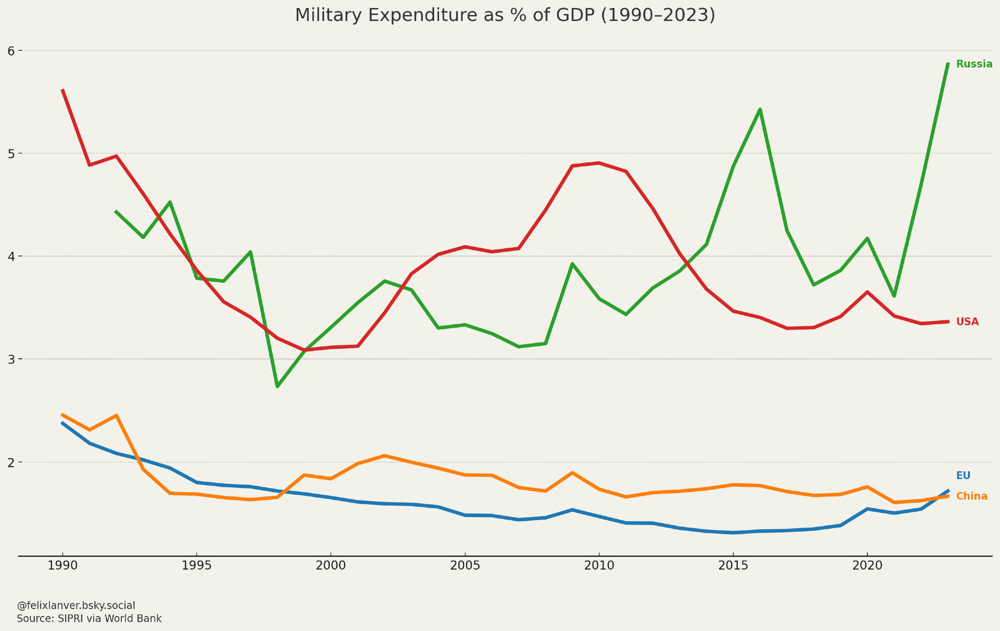Top 10 Military Spenders
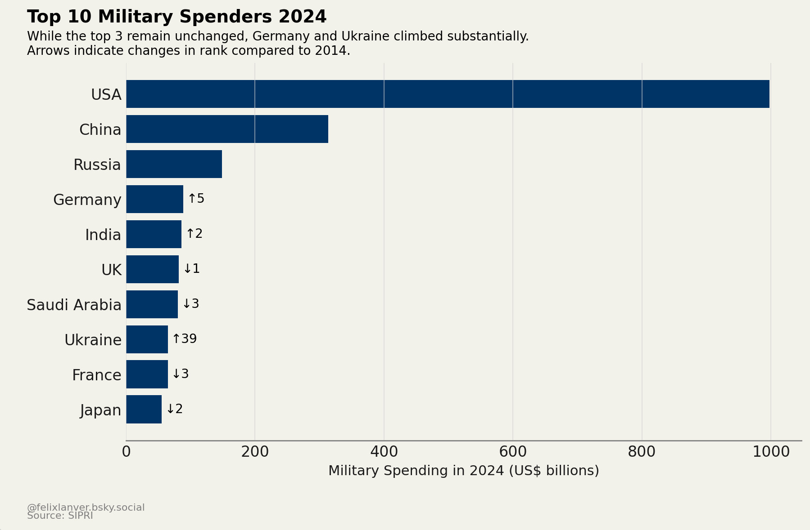City Population
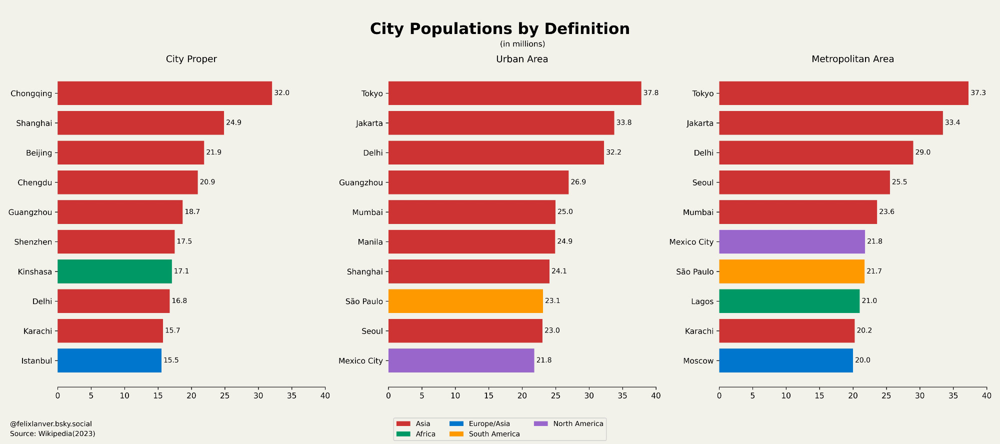Election Polls: Australia
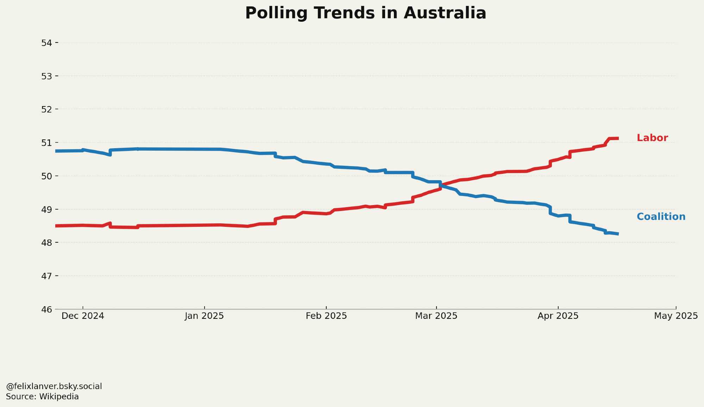Election Polls: Canada
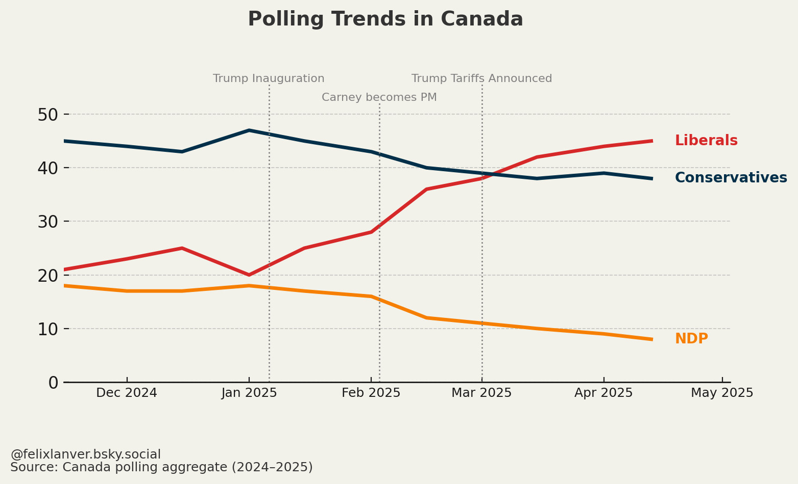Election Polls: Korea
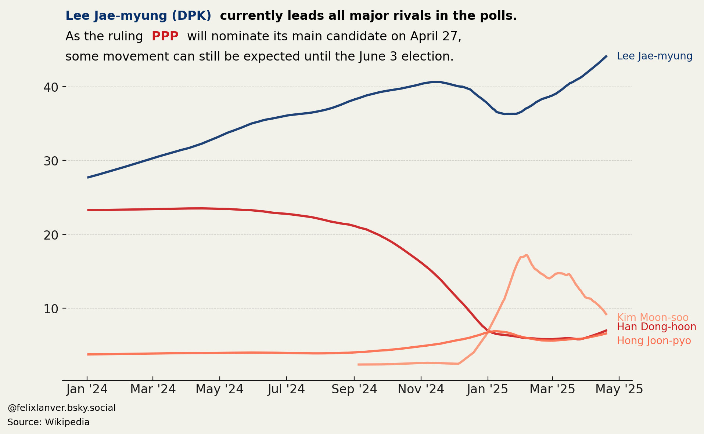Election Polls: Poland
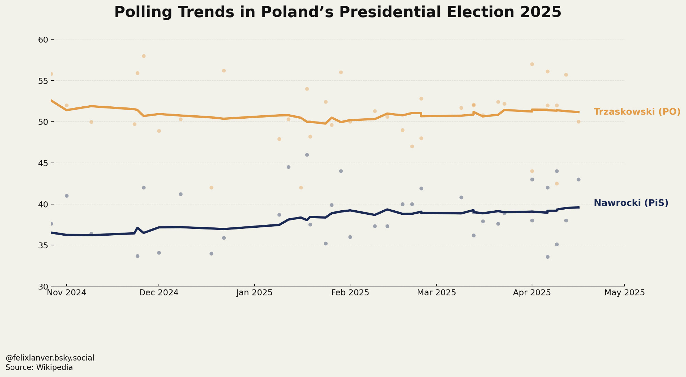Pope: Cardinals per Country
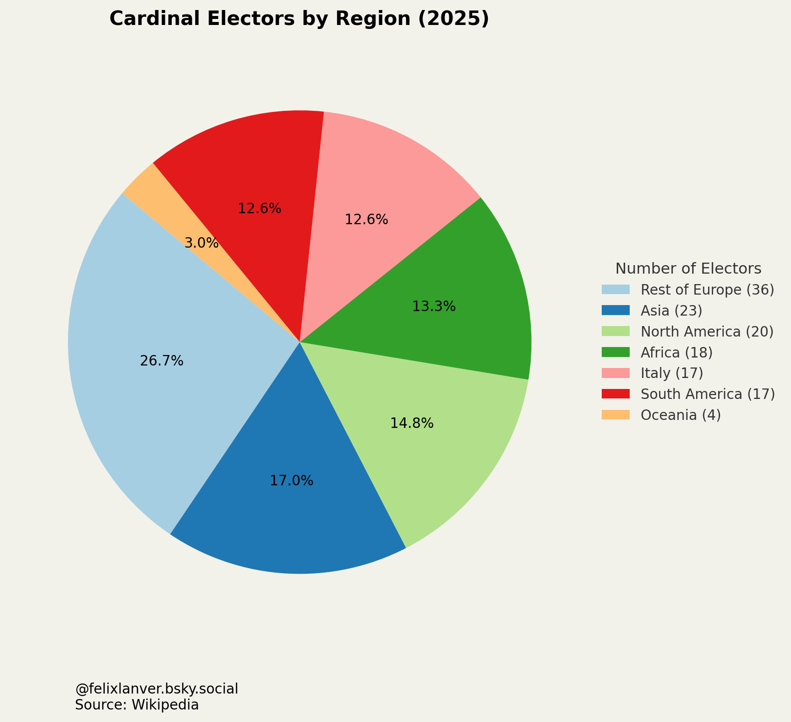Country of Origin of Popes
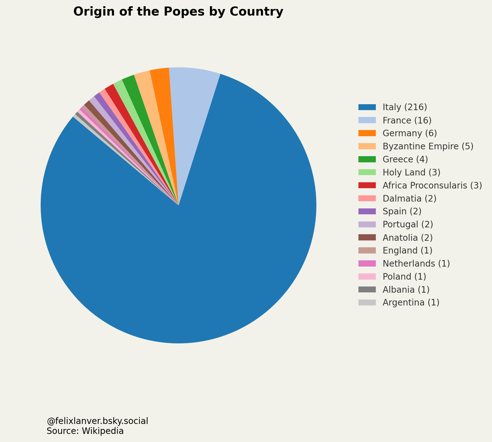